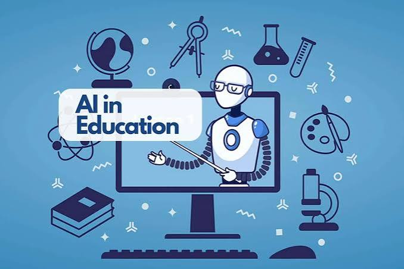

الفوائد
- توفير الوقت وزيادة الإنتاجية.
- تحليل كميات كبيرة من البيانات.
- دعم التعلم والتعليم.
- تحسين خدمات الرعاية الصحية.
- أتمتة المهام المتكررة.
ثورة الذكاء الاصطناعي وتأثيرها في حياتنا
الذكاء الاصطناعي (Artificial Intelligence)، واختصاره AI، هو مجال من علوم الحاسب يهدف إلى تطوير أنظمة وبرامج قادرة على تنفيذ مهام تتطلب عادةً قدرات بشرية، مثل التعلم، وفهم اللغة، وتحليل المعلومات، وحل المشكلات، والتعرف على الصور، والمساعدة في اتخاذ القرارات.
أصبحت ثورة الذكاء الاصطناعي من أبرز التحولات التقنية في العصر الحديث، حيث ساهمت في تغيير طريقة عمل المؤسسات وتعلم الأفراد وتواصلهم مع التكنولوجيا.
تعرف على أبرز مجالات استخدام الذكاء الاصطناعي. مرر مؤشر الفأرة على البطاقة لاكتشاف المزيد.

يتيح الذكاء الاصطناعي للحواسيب تنفيذ مهام تتطلب عادةً ذكاءً بشريًا، مثل التعلم وحل المشكلات.

يساعد الذكاء الاصطناعي الطلاب من خلال التعلم المخصص، والتعليم الذكي، والأدوات التعليمية الحديثة.
.jpg)
يساعد الذكاء الاصطناعي في تحليل الصور الطبية، ودعم التشخيص، ومساعدة المتخصصين في مجال الرعاية الصحية.
.jpg)
يساعد الذكاء الاصطناعي الشركات في تحليل البيانات، وأتمتة المهام، وتحسين خدمة العملاء، ودعم اتخاذ القرارات.
يستمر الذكاء الاصطناعي في التطور، وقد يسهم في تغيير الطريقة التي نعيش ونتعلم ونعمل بها.
بدأ البحث في مجال الذكاء الاصطناعي في خمسينيات القرن الماضي، وركز على تعليم الحواسيب حل المشكلات ومحاكاة التفكير البشري.
يُستخدم الذكاء الاصطناعي في المساعدات الافتراضية، والتعليم، والرعاية الصحية، والأعمال، وإنشاء المحتوى.
قد يساعد الذكاء الاصطناعي في تطوير المدن الذكية، وتحسين الأبحاث الطبية، وإنشاء تجارب تعليمية أكثر تخصيصًا.